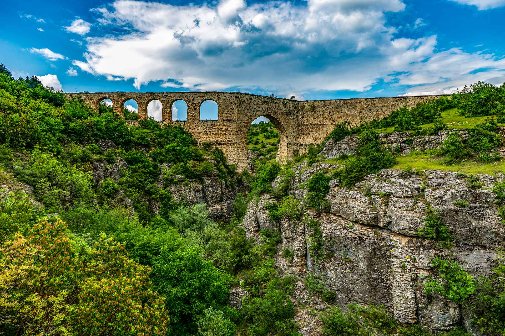
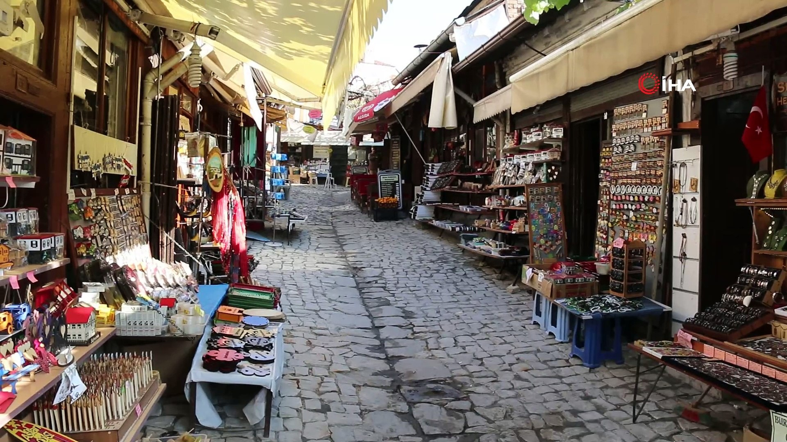

GÖRÜLMESİ GEREKEN YERLER

Kristal Teras
Kristal Teras hakkında bilgi sahibi olmak isterseniz fotoğrafa tıklayınız.
Bulak Mencilis Mağrası
Bulak Mencilis Mağrası hakkında bilgi sahibi olmak isterseniz fotoğrafa tıklayınız.

İncekaya Su Kemeri
İncekaya Su Kemeri hakkında bilgi sahibi olmak isterseniz fotoğrafa tıklayınız.

Tarihi Çarşı
Tarihi Çarşı hakkında bilgi sahibi olmak isterseniz fotoğrafa tıklayınız.